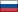

x1
- x0.5
- x0.75
- x1
- x1.5
- x2
Overview
Dictionary
Open script
Видео
Как покрасить шкуру северного оленя
Информация о записи
- Recorded byName, Last Name
- Transcribed byName, Last Name
- Speakers/ParticipantsVDZDTTPSNVPDCK
- Date [Time] recorded08/17/2011 [12:30]
- Place recordedPlace name
- Type narrativeType narrative
- File typeCO_CNI_sare'n_20110817.wav
- Keywords1987Южный диалектДыбовскиКовранhunter
Специальные символы
ӑ
ё
ŏ
ў
ә
љ
ԓ
њ
ӈ
ӄ
ӽ
кˊ
ӄˊ
пˊ
тˊ
чˊ
˚
ʔ
Всего слов — 9 214
А
Б
В
Г
Д
Е
Ж
З
И
Й
К
Кˊ
Ӄ
Ӄˊ
Л
Љ
Ԓ
М
Н
Њ
Ӈ
О
П
Пˊ
Р
С
Т
Тˊ
У
Ф
Х
Ӽ
Ч
Чˊ
Ш
Щ
Ә
Э
Очистить
Часть речи
Инфинитив
Прилагательные
Переход-й глагол
Существительное
Непереход-й глагол
Наречие
Языки
Западный
Восточный
Южный
Язык перевода

Русский
Английский
Японский
Источник
Крш ВКрашенинников восточный
Крш ВКрашенинников восточный
Кр ВКрашенинников восточный
Крш ВКрашенинников восточный
Крш ВКрашенинников восточный
Крш ВКрашенинников восточный
Аа
Бб
библиотэкараʔн
Ru
<перевод1>длинная строк...
En
<перевод2>длинна строка которую ну...
Связ-я оcнoвa, Неп.
библиотэкараʔн
Ru
<перевод1>длинная строк...
En
<перевод2>длинна строка которую ну...
Связ-я оcнoвa, Неп.
библиотэкараʔн
Ru
<перевод1>длинная строк...
En
<перевод2>длинна строка которую ну...
Связ-я оcнoвa, Неп.
библиотэкараʔн
Ru
<перевод1>длинная строк...
En
<перевод2>длинна строка которую ну...
Связ-я оcнoвa, Неп.
Вв
Auto play on selection

00:00
This is our (clothing) we wore it at one time; they make very beautiful appliqués. second line
/* tiʔnu məziʔn χeŋniʔn i ntzəlqzuneʔn itʼe, lʲi čʼinəŋlaχaʔn retʼemtʼelʔiʔn nskatezneʔn. second line */
01:55
This is our (clothing) we wore it at one time; they make very beautiful appliqués. second line
/* tiʔnu məziʔn χeŋniʔn i ntzəlqzuneʔn itʼe, lʲi čʼinəŋlaχaʔn retʼemtʼelʔiʔn nskatezneʔn. second line */
02:34
This is our (clothing) we wore it at one time; they make very beautiful appliqués. second line
/* tiʔnu məziʔn χeŋniʔn i ntzəlqzuneʔn itʼe, lʲi čʼinəŋlaχaʔn retʼemtʼelʔiʔn nskatezneʔn. second line */
04:18
This is our (clothing) we wore it at one time; they make very beautiful appliqués. second line
/* tiʔnu məziʔn χeŋniʔn i ntzəlqzuneʔn itʼe, lʲi čʼinəŋlaχaʔn retʼemtʼelʔiʔn nskatezneʔn. second line */
00:00
This is our (clothing) we wore it at one time; they make very beautiful appliqués. second line
/* tiʔnu məziʔn χeŋniʔn i ntzəlqzuneʔn itʼe, lʲi čʼinəŋlaχaʔn retʼemtʼelʔiʔn nskatezneʔn. second line */
00:00
This is our (clothing) we wore it at one time; they make very beautiful appliqués. second line
/* tiʔnu məziʔn χeŋniʔn i ntzəlqzuneʔn itʼe, lʲi čʼinəŋlaχaʔn retʼemtʼelʔiʔn nskatezneʔn. second line */
00:00
This is our (clothing) we wore it at one time; they make very beautiful appliqués. second line
/* tiʔnu məziʔn χeŋniʔn i ntzəlqzuneʔn itʼe, lʲi čʼinəŋlaχaʔn retʼemtʼelʔiʔn nskatezneʔn. second line */
00:00
This is our (clothing) we wore it at one time; they make very beautiful appliqués. second line
/* tiʔnu məziʔn χeŋniʔn i ntzəlqzuneʔn itʼe, lʲi čʼinəŋlaχaʔn retʼemtʼelʔiʔn nskatezneʔn. second line */
00:00
This is our (clothing) we wore it at one time; they make very beautiful appliqués. second line
/* tiʔnu məziʔn χeŋniʔn i ntzəlqzuneʔn itʼe, lʲi čʼinəŋlaχaʔn retʼemtʼelʔiʔn nskatezneʔn. second line */
00:00
This is our (clothing) we wore it at one time; they make very beautiful appliqués. second line
/* tiʔnu məziʔn χeŋniʔn i ntzəlqzuneʔn itʼe, lʲi čʼinəŋlaχaʔn retʼemtʼelʔiʔn nskatezneʔn. second line */
00:00
This is our (clothing) we wore it at one time; they make very beautiful appliqués. second line
/* tiʔnu məziʔn χeŋniʔn i ntzəlqzuneʔn itʼe, lʲi čʼinəŋlaχaʔn retʼemtʼelʔiʔn nskatezneʔn. second line */
00:00
This is our (clothing) we wore it at one time; they make very beautiful appliqués. second line
/* tiʔnu məziʔn χeŋniʔn i ntzəlqzuneʔn itʼe, lʲi čʼinəŋlaχaʔn retʼemtʼelʔiʔn nskatezneʔn. second line */
00:00
This is our (clothing) we wore it at one time; they make very beautiful appliqués. second line
/* tiʔnu məziʔn χeŋniʔn i ntzəlqzuneʔn itʼe, lʲi čʼinəŋlaχaʔn retʼemtʼelʔiʔn nskatezneʔn. second line */
00:00
This is our (clothing) we wore it at one time; they make very beautiful appliqués. second line
/* tiʔnu məziʔn χeŋniʔn i ntzəlqzuneʔn itʼe, lʲi čʼinəŋlaχaʔn retʼemtʼelʔiʔn nskatezneʔn. second line */
00:00
This is our (clothing) we wore it at one time; they make very beautiful appliqués. second line
/* tiʔnu məziʔn χeŋniʔn i ntzəlqzuneʔn itʼe, lʲi čʼinəŋlaχaʔn retʼemtʼelʔiʔn nskatezneʔn. second line */
00:00
This is our (clothing) we wore it at one time; they make very beautiful appliqués. second line
/* tiʔnu məziʔn χeŋniʔn i ntzəlqzuneʔn itʼe, lʲi čʼinəŋlaχaʔn retʼemtʼelʔiʔn nskatezneʔn. second line */
00:00
This is our (clothing) we wore it at one time; they make very beautiful appliqués. second line
/* tiʔnu məziʔn χeŋniʔn i ntzəlqzuneʔn itʼe, lʲi čʼinəŋlaχaʔn retʼemtʼelʔiʔn nskatezneʔn. second line */
00:00
This is our (clothing) we wore it at one time; they make very beautiful appliqués. second line
/* tiʔnu məziʔn χeŋniʔn i ntzəlqzuneʔn itʼe, lʲi čʼinəŋlaχaʔn retʼemtʼelʔiʔn nskatezneʔn. second line */
00:00
This is our (clothing) we wore it at one time; they make very beautiful appliqués. second line
/* tiʔnu məziʔn χeŋniʔn i ntzəlqzuneʔn itʼe, lʲi čʼinəŋlaχaʔn retʼemtʼelʔiʔn nskatezneʔn. second line */
00:00
This is our (clothing) we wore it at one time; they make very beautiful appliqués. second line
/* tiʔnu məziʔn χeŋniʔn i ntzəlqzuneʔn itʼe, lʲi čʼinəŋlaχaʔn retʼemtʼelʔiʔn nskatezneʔn. second line */